RUN50 DISPATCH · RUNCN
RunCN 第10站 · 厦门马拉松 · 以最难忘的出场，享拥每一句赞扬
RunCN · 中国跑马故事
Vlog 开场位｜Runcn
OPENING NOTE
2018年的首马，在厦门的雨里开场：曾厝垵、兄弟重逢、赛道掌声和一个惊艳自己的开局。
本文速记
2018年的首马，在厦门的雨里开场：曾厝垵、兄弟重逢、赛道掌声和一个惊艳自己的开局。

奖牌质感封面｜Runcn
RunCN Map - Fujian @Arsenan
以最难忘的出场，享拥每一句赞扬
——记录我的厦马故事
灯火星星，人声杳杳，
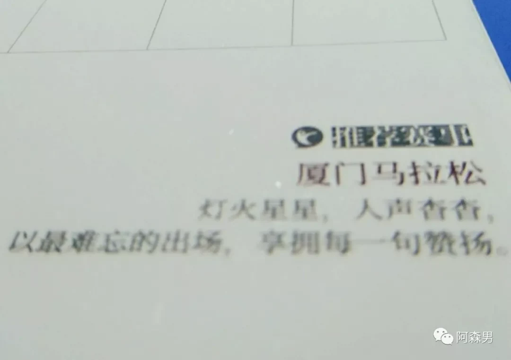
以最难忘的出场，享拥每一句赞扬。
FIELD NOTE 01
前记
Run50
此刻，2017的剧情已经落幕，但对我而言，那里的爱恨却未曾入土。在2017里，我从一个小胖纸变成了精壮的跑者，从跑步菜鸟化身赛道达人，历经九马征途，4半马，5全马。远安，武汉，合肥，长治，鄂尔多斯，哈尔滨，广安，宜昌，长沙。我想写下这些城市的名字，每座城都是闪耀的坐标，每座城亦都有它的故事，说实话，对于过去的2017，我很想念。而今站在2018的伊始，我告诉自己：不念过往，不畏将来，要以最难忘的方式出场，然后享拥每一句赞扬。而金标厦马恰逢其时，所以，2018的故事，以厦马开篇。
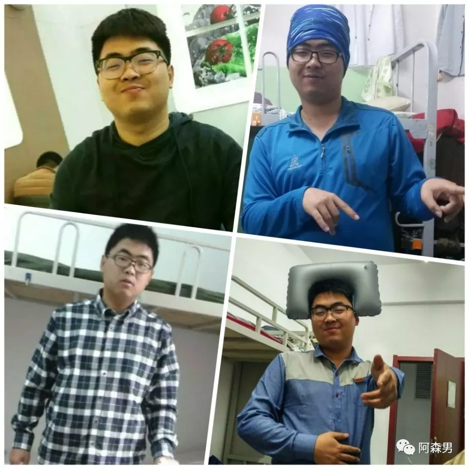
2017年之前
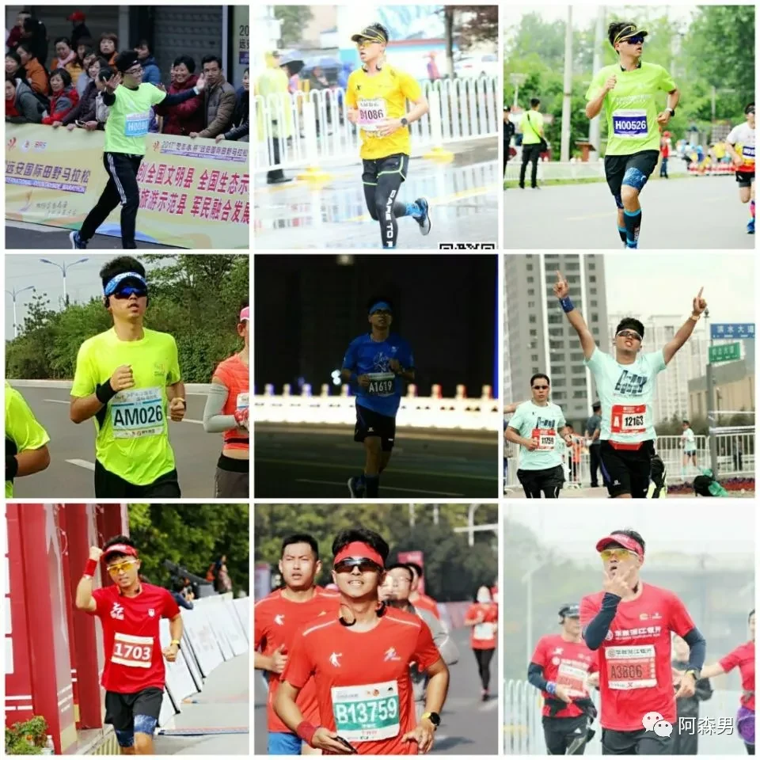
2017的九马
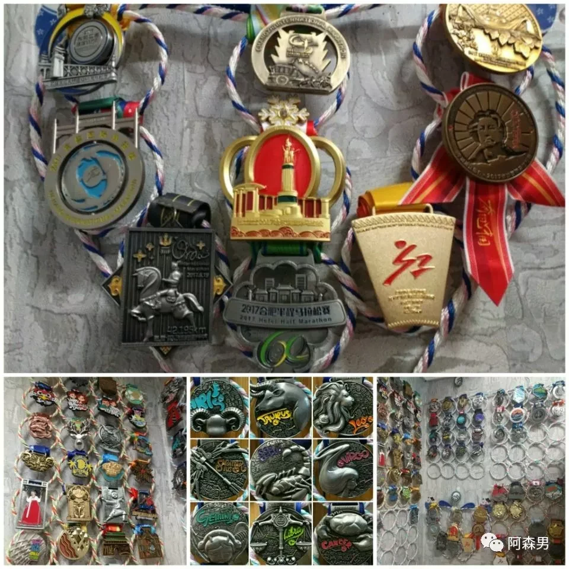
2017一年里所有的线上线下奖牌
FIELD NOTE 02
赛前
Run50
厦门马拉松作为国内开年以来的第一个金标赛事，可以说是跑步圈的重头戏，时间是一月七日，2018年的第一个周末。我早早就和浩彬约好这次还要住在一起，浩彬和我相识于长沙马的青年旅舍，一同经历过风雨的兄弟，他在东莞，我在武汉，总觉得赛道上认识的朋友总有一种特别的亲切感，所以我们早早就定了同一家青旅，相约厦门重逢。出发的时候正赶上全国大降温，武汉居然都下了雪，然后火车晚点3个小时，到厦门的时候已经凌晨1点了，我有个习惯，每到一个新的城市，总想自己先感受一下，厦门很暖和，所以我找了个hello bike，带上蓝牙耳机，听着导航，一路骑向loft青年旅舍，距离大约7公里，骑到3公里的时候饿的不行，下车找了一个面馆饱餐一顿后继续骑行，行过幽静的山路，疾驰向目的地，四处无人，只有一人一车一路掩映在斑斓的灯光下，与厦门的初次亲密接触显得如此梦幻。凌晨2点多，赶到青旅。老板是哈尔滨老乡，用东北话寒暄几句后我便收拾床铺上床睡觉。
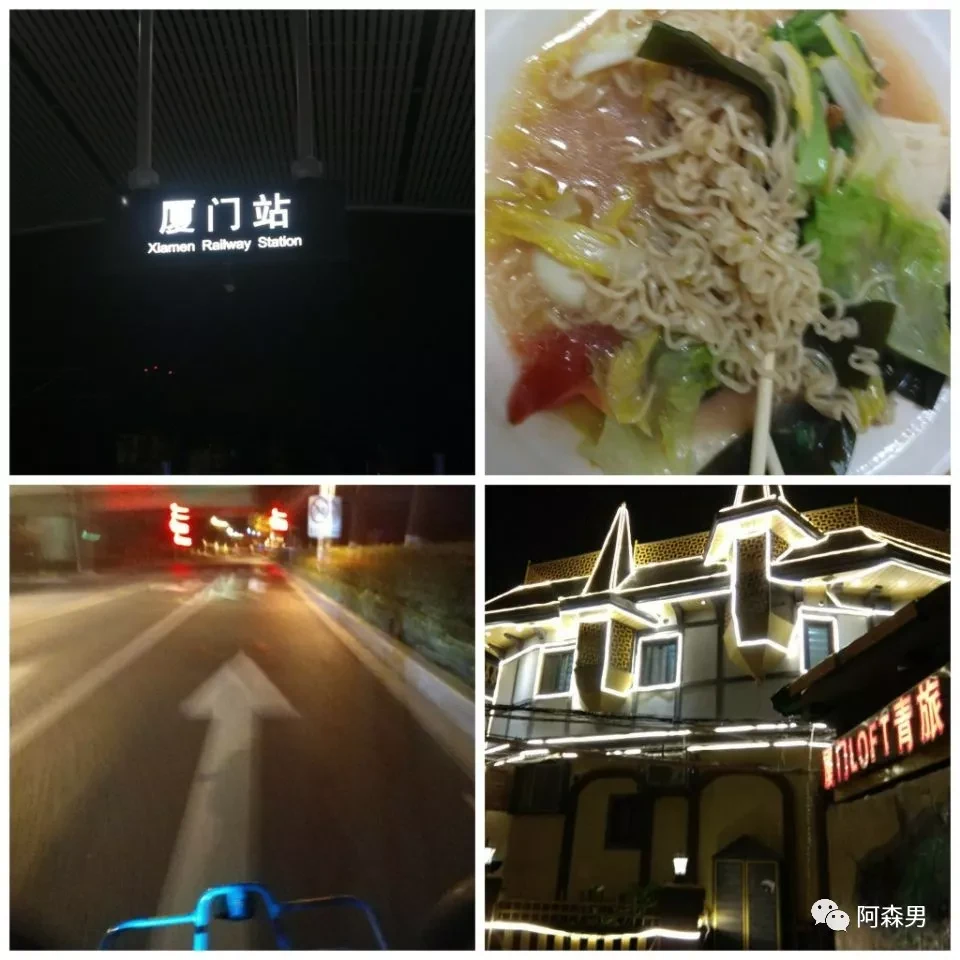
第二天起床去会展中心取装备，微信得知，浩彬也到了厦门，周六的厦门并不友好，淅淅沥沥的雨让全国各地赶来的跑者措手不及，说好的阳光，海浪，沙滩，仙人掌呢？更可恶的是，天气预报说，比赛日的天气是中到暴雨。白天起来才发现我住在号称中国第一文艺小渔村的曾厝垵，冒雨穿过街巷，是一条条冒着热气的香喷喷的小吃街，精致的小食让人有那么一瞬间分不清究竟是艺术品还是食品。
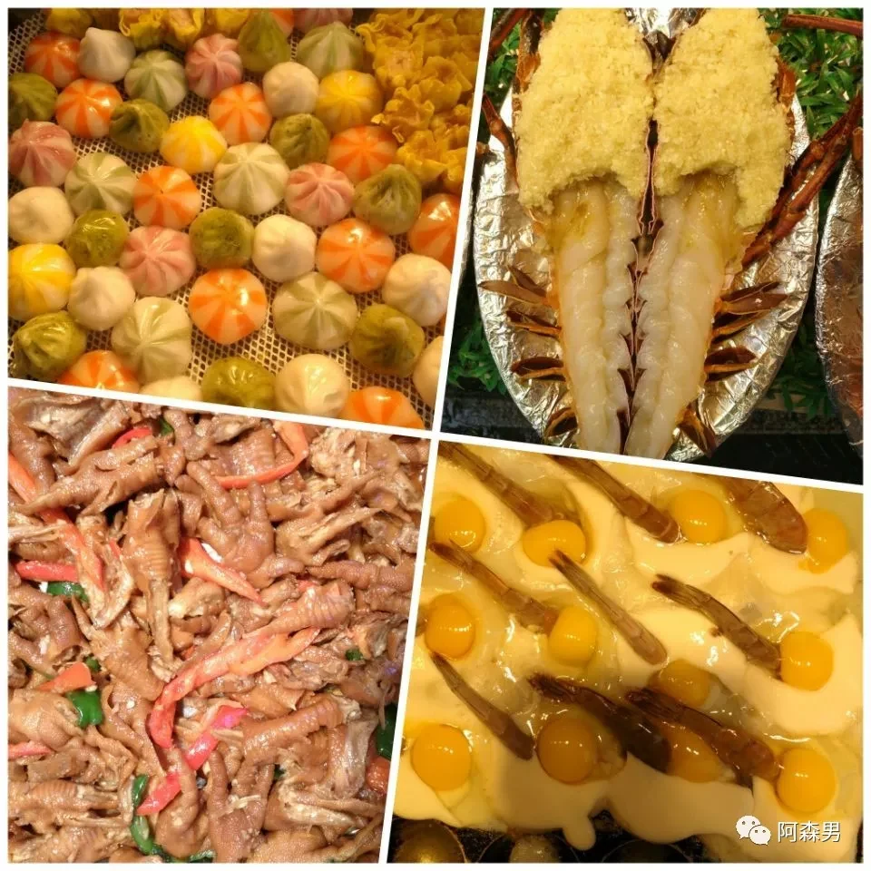
公交到会展中心，排队取了装备，游玩了一圈厦马的博览会，便返回到青旅，没过多久浩彬也回来了，然后两个人决定去厦大看一看，作为一个武汉大学的老研究生，我对厦大之行无比期待，恕我浅薄，因为我真的想比较一下究竟谁才是中国最美大学。
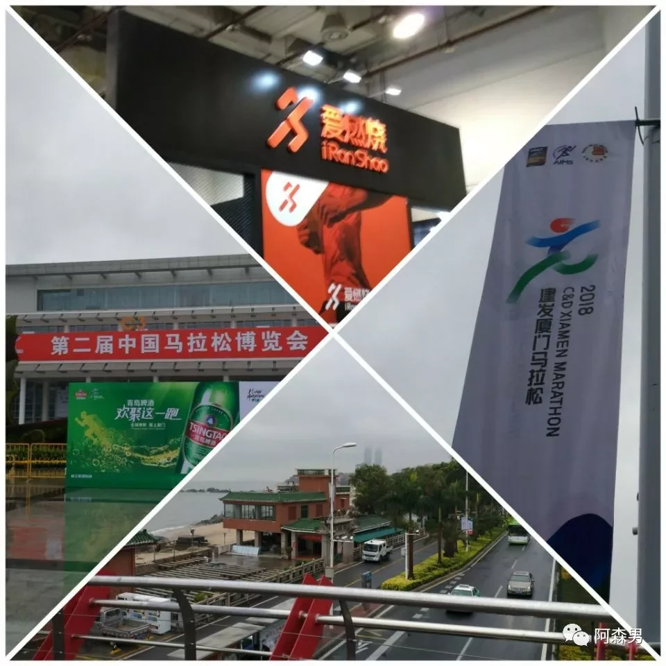
厦大校区真的多，我俩跑了三个校区才找到主校区，虽然下着雨，天也渐渐变黑，但这些都挡不住厦大精致的美，芙蓉隧道的涂鸦，上弦操边的双塔，宫殿般的宿舍，会让人觉得厦大的小资和精致总是透露着一股优雅的情调。作为一个武大人，来过厦大后，可以客观的说，武大大气的民国风和壮阔的珞珈山水也只有厦大才能与之难分伯仲吧。
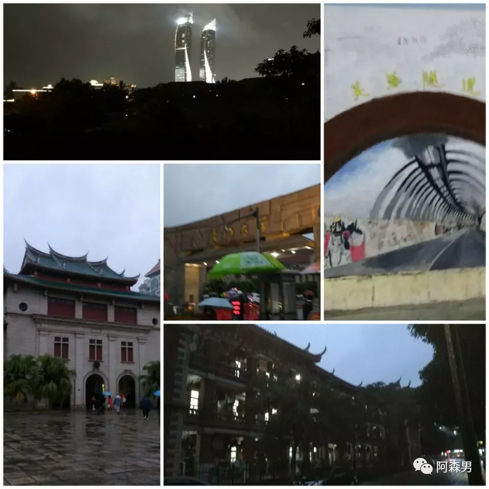
回到青旅后做最后的调整，来之前我有所准备，想给2018年的首马增添几分仪式感，所以我右“武大”，左“珞珈”的涂鸦应运而生，我告诉自己这次你不是一个人再跑，logo有时也会有力量。
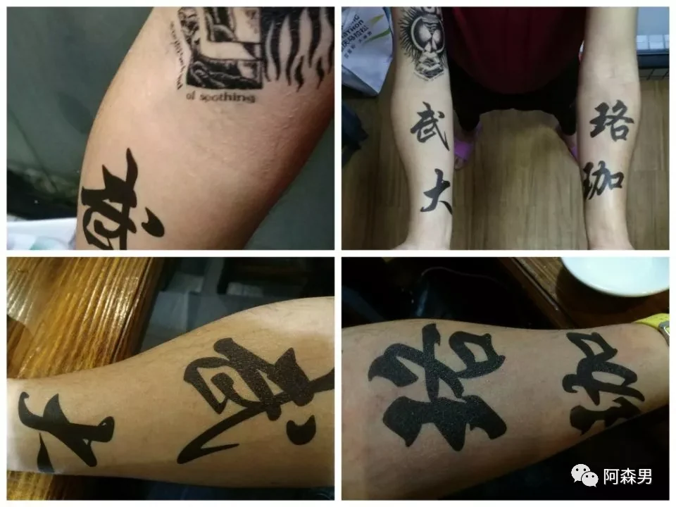
赛场
又是一夜的大雨，雨落地的声音恨不得能把人砸醒，第二天我们早早起来赶赴赛场，雨真的太大了，出发前手机进了水，导致我带的两副分离式无线蓝牙耳机没了用场，歌听不了了，跑步软件也打不开了，还好老司机我还有佳明，厦马是我参加的第一个只有全马的比赛，并且采用分枪起跑的方式，由于之前我跑到过355，四个小时以内的成绩，所以很幸运的被分到了A区，第一批7点30分出发。随着蔡振华主席等领导的一齐鸣枪，A区的近一万名选手迎着大雨，涌向赛道。
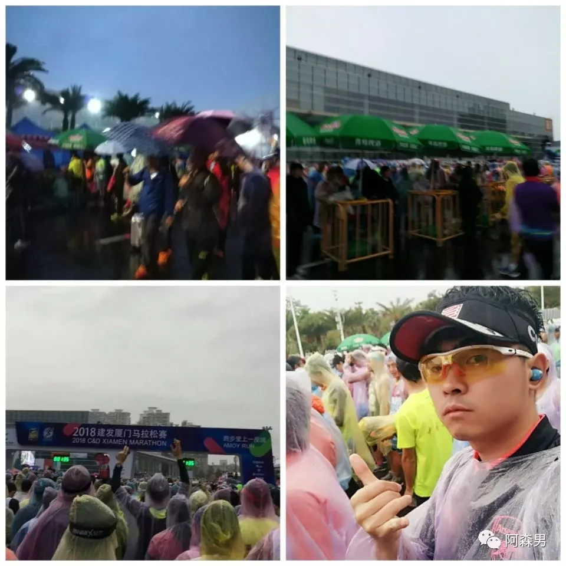
前几公里佳明漂的厉害，显示配速一度达到3分钟每公里，之前的比赛我都是听着软件的配速调整自己的节奏，看来这次只能摸着黑跑了，我调整好心态，不看手表。索性就跟着自己喜欢的配速来，大雨滂沱，完赛就ok，也没有pb的压力，放开手脚的我一路寻找着摄影师的镜头，既然跑不快，那就跑的帅吧。
前五公里就这样跑跑玩玩的过去，也有兴致欣赏赛道的美景，大雨倾城，沿着海岸线跑，雾气弥漫，各色流动的人群如在仙境中穿梭，向着42公里的终点奔去。5公里过去，我看了一下时间，自己居然跑了5分钟每公里的配速，心想不好，后半程要崩，也就在这时，赛道上偶遇跑团大神麦哥，跟了一公里才知道麦哥目标330，我吓了一跳，赶紧放麦哥走，这个成绩我无法企及，前半程就就崩了有点丢人，我就又回到了之前的节奏，吃吃喝喝，找镜头，舒舒服服的跑，心态很放松，七八公里的样子，我看到一持永久号牌的厦马荣耀跑者，配速和我差不多，上前问了一句目标多少，他说4小时内吧，我很开心，说那就跟着您跑吧，结果他刚说完好，就开始疯狂的加速，直到消失在了我的目光之外。额，好吧。十公里多，我看到一大叔跑的特别稳，是太原的跑者，因为之前去过山西长治跑马，寒暄了几句觉得很亲切，就这样，我跟着大叔的节奏一路向前，大叔的配速是5分钟每公里，我知道自己最后肯定会掉队，所以和大叔说，您就按照自己的速度来，后半程我跟不上您您就直接走。跟着大叔路过第一个折返点，在大桥上奔跑的感觉爽极了，如果雨再小一点简直完美。
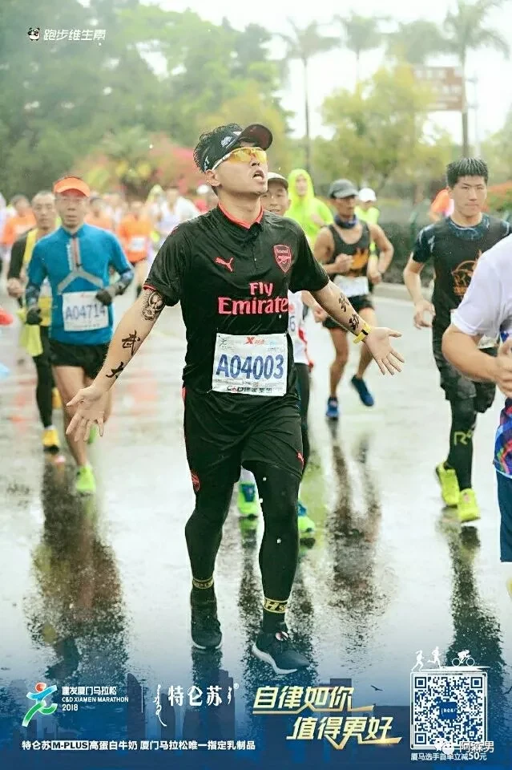
大叔每到一个补给点都会都给我塞好多吃的，我亦是如此，就这样我们一路跑到20多公里，这时大叔看到路边的亲友过去拍照，虽有些不舍，但我也不愿再做停留，就这样，我又成了孤独的行者，前半程的配速比我预期的快很多，后半程完全是未知的旅程，我也不知道自己的崩溃点在哪里，所以那就由着性子跑吧，自由不羁，不按常理出牌的浪漫主义情怀不也正是跑马人的性情么？感觉不错就快点，累了就去找补给，25公里处，我抓到了浩彬，我知道他的水平在345左右，比我的pb快了十分钟，我们打了个招呼但互不跟随，按照自己的节奏来吧，直到30公里，我们互有赶超，之后就未曾相见。
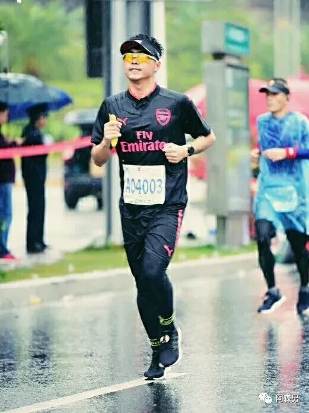
30公里处，我吃了一条能量胶，给自己打气，真正的后半程才刚刚开始，这时候在我前面出现一姑娘，女孩子能跑进这个配速真的很了不起，一定是大男子主义情怀作祟，心想绝对不能输给她，跟着她跑到34公里，她掉队了，我也渐渐感觉到疲劳，有很明显的撞墙趋势，不过这已经比我预期的时间晚很多了，我又啃了一条能量胶勉强维持，35公里处，估计到了我的极限，我看看右臂的“武大”logo，狠狠的亲了一口，然后摘下眼镜套在了空顶帽上，不看熙熙攘攘的人群，低头，只注意自己脚下的路，此时的我似乎进入了一种混沌的状态，一步一步迈向前方，不知真是logo的神奇力量，还是34公里处的能量胶起了作用，35到40公里几乎跑出了我的全程最佳配速，最快速度一度达到415，浑然不知中居然超过了麦哥和浩彬。40公里处，疲劳感又涌了回来，我反戴空顶帽，戴回眼镜，给自己一个新的状态迎接终点的到来，最后的距离兴奋掩盖了疲劳，激动淹没了风雨，冲线瞬间定格在340，净成绩339，我居然pb了近20分钟。高扬的双臂，激动的怒吼正是我此刻心情的真实写照。
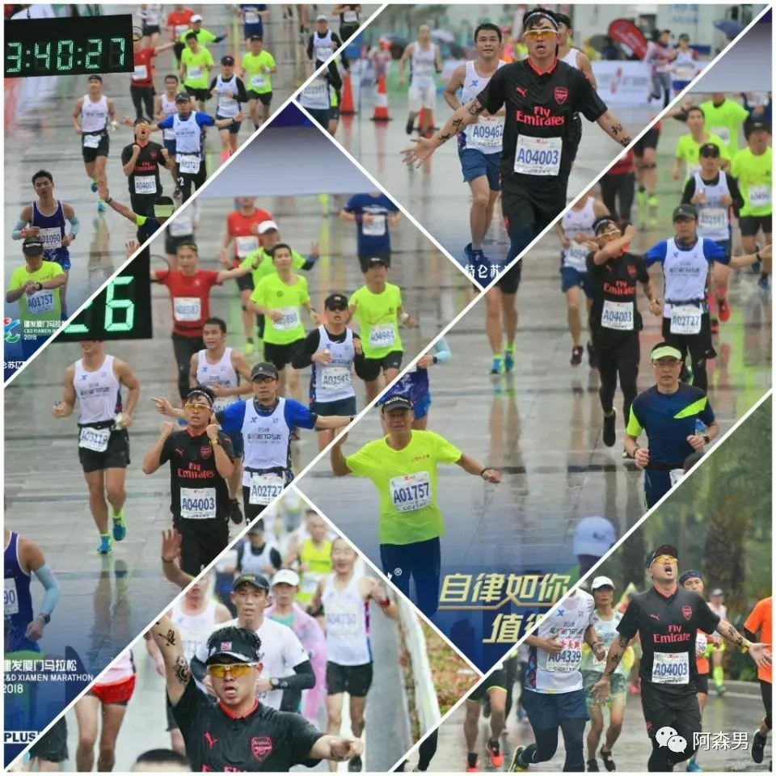
进入会展中心取包裹，两边列队的志愿者为每个完赛的跑者送上最真挚的掌声，他们像迎接英雄一样迎接我们的归来，那一刻，眼泪在眼圈中打转。“以最难忘的方式出场，享拥每一句赞扬”，这句话，送给我自己，2018的首马给了自己一个惊艳的开场，突破了极限挑战了自我；也送给在大雨中奔跑的22000多名跑者，正是那川流的人群，如生生不息的火种般温暖了风雨中的厦门城，有温度，也有感动；更要送给厦门马拉松，名副其实的金标赛事，从赛前一条条的短信提醒，到赛前赛后参赛包的实实在在，还有赛中的补给保障完赛后的跑者恢复区，无一例外的显得诚意十足。特别是在这个马拉松报名费水涨船高，而参赛体验良莠不齐的时代，厦马的高规格似乎显得格格不入。今以厦马为起点，吹响2018年中国马拉松的集结号真的再好不过，真心希望18年的中国马拉松都能接近厦马的高标准。
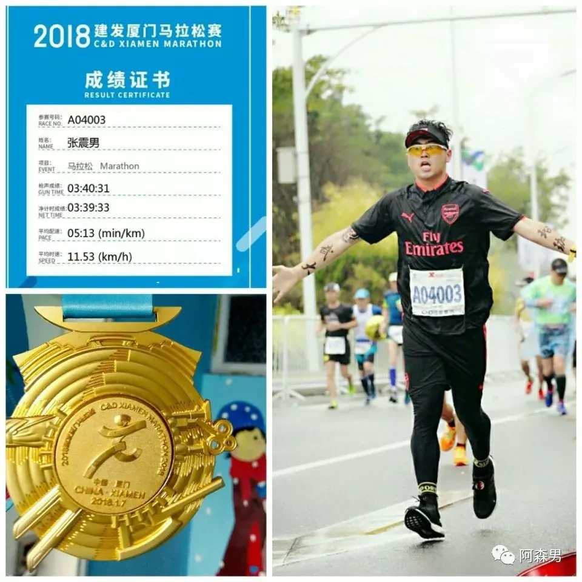
FIELD NOTE 03
赛后
Run50
手机因雨水报废掉，联系不上浩彬，还好带了现金，还能打车回到青旅。下午和浩彬吃了曾厝垵的肠粉和蟹黄包，他便匆匆赶车，回归日常的工作，而我，还要再住一夜，明日启程。赛后的惊喜在于青旅来了一位特殊的客人，网易原创音乐人黄磊磊，他的一首《无法忘怀》不知感动了多少人，一副纯正的民谣嗓真的让人如痴如醉，厦门，亦或者说曾厝垵的魅力可能就在于此，你不知道哪个旅舍里就聚集着一群文艺咖，谈理想，聊人生，几个地下音乐人从汪峰聊到赵雷，黄磊磊的歌也从《理想》唱到《南方姑娘》，北漂十年，也不知他是否实现了自己的理想。很有缘，黄磊磊晚上住在我的下铺，第二天临行前我们互祝安好，我祝福他写出更多的好作品，他笑着说“慢慢来吧，还年轻，总有一个过程。”并祝愿我一路顺风。
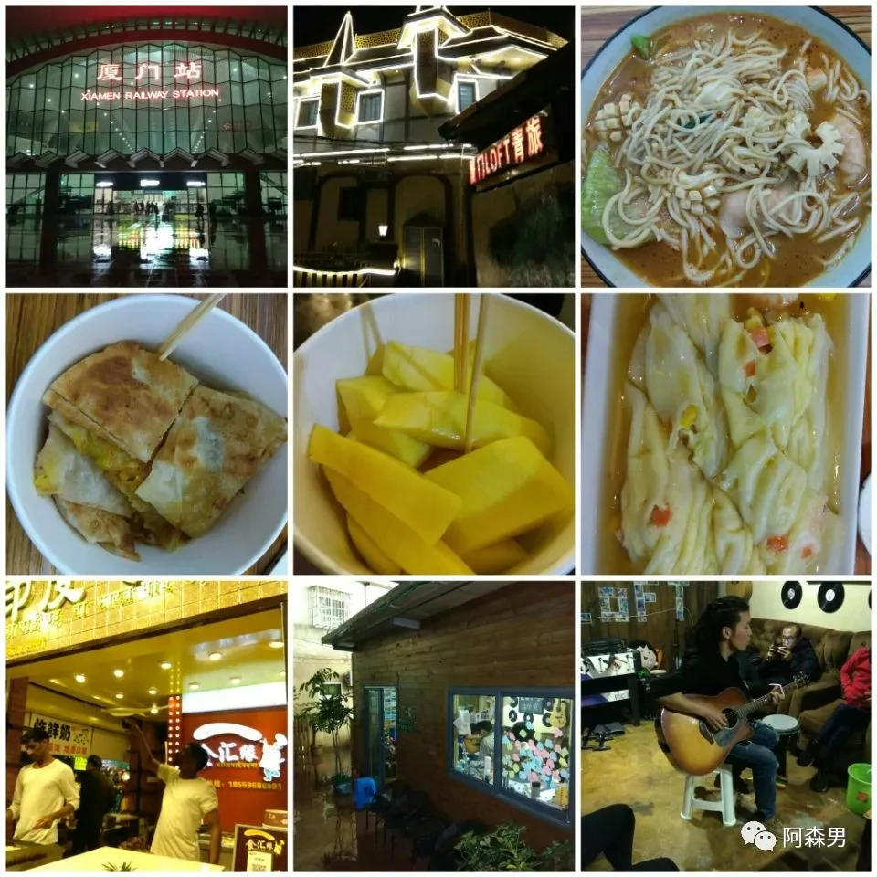
我们都在路上，那一个个陌生灵魂的碰撞其实都是在诉说各自的故事。黄磊磊的音乐之路还会走下去，也许会是下一个赵雷，也许不是。而对于我，我作为跑步爱好者的跑马之路，我作为一名研究生的科研之路也会一直的走下去，只要满怀期待，只要义无反顾，我相信，我们都会成为那个我们所期待成为的那个人。
一首青旅录制的黄磊磊翻唱的《理想》
行色匆匆，踏上归途。本着每城每马只来一次的原则，厦马既是开始也是结束。对于厦马，“以最难忘的出场，享拥每一句赞扬”开始，用黄磊磊的《无法忘怀》结束，一切再好不过，厦门。也许不会再来，但我一定会想念，2018，愿我们都能发现更好的自己。
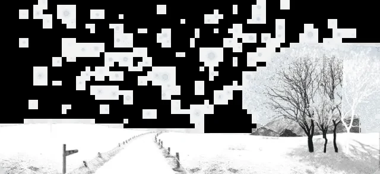
留言 / 访问次数
FIELD NOTE 04
跑完也说两句
Run50
不用注册账号即可提交留言，提交后会直接显示。
RUN50 FINISH LINE
这一站，收进地图。
2018年的首马，在厦门的雨里开场：曾厝垵、兄弟重逢、赛道掌声和一个惊艳自己的开局。 跑完这一篇，Run50 的故事又多了一块颜色。
10
RUN50
RUNCN
MARK
站
NOTE
如果这一站也勾起了你的某段跑步记忆，欢迎在公众号留言里接着聊。别太正式，像赛后坐下来喝一口水那样就行。
文字 / 编辑 / 排版 · Arsenan